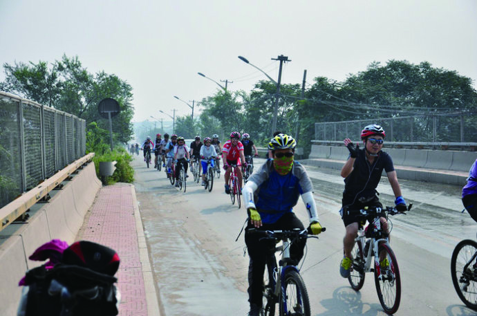
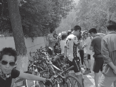

第2次骑行潭拓寺（我被捡走了）
黑狼语录：
- 减肥、喝酒，如何能有机的结合在一起呢？
自从 7 月底骑行长春归来后，失去了目标，一直修心养性。
喝了几天酒，脂肪增加不少，又需要消耗掉储备的大量能量了。
胡有理同志周末带着小孩去参加单位的 2 日郊游，让我骑自行车去，晚上可以在那住宿，第二天再骑车回来。我一查地图才 90 多公里，太近了，算了，不去凑这个热闹了。
周六一早起床后，犹豫着到底是去涿州还是潭拓寺。等快到 9 点钟，骑上自行车出了小区后，还在考虑着这个问题，反正不是涿州就是潭拓寺。
快到西四环沙窝桥的时候，碰到了几个骑行的哥们，他们要去潭拓寺，我说非常好，我终于知道要去哪里了。跟着走了不到一分钟，才发现原来后面还有将近 20 人，好大的一群人！
从今年 4 月份以来，我都是一个人骑行，没有太紧迫的计划，累了就休息，比较散漫。
跟着大家走了一会儿，才想起没有预备矿泉水，赶紧趁大家上厕所的功夫买了 2 瓶水，这条路，基本没有补充的地方。
（爬坡前最后集结时的英姿）
这条路基本就是一个大上坡，到达戒台寺，然后一个大下坡，就到了潭拓寺镇，然后再 4 公里的一个上坡就到潭拓寺了。
一口气爬完第一个大上坡，到戒台寺。上次我还是中间歇了 1-2 次，看来人多就是能发挥出不少潜能。
（戒台寺休息）
休息闲聊的时候，大家都称呼我为“半路捡的”，搞得我像是被人遗弃的小孩似的。错！应该是走丢的老大爷！一群人都比我小，居然还有几个 90 后。
（返程前拍的合影）
中午（15:30）吃饭，确实有点饿。
这次的活动，群里面的几个哥们（还对不上号），组织的非常有序，居然还有后援车，大家互相照应，直到分手。
我是在现实中通过眼睛搜索到这个群的，希望以后能多多参加群集体活动。